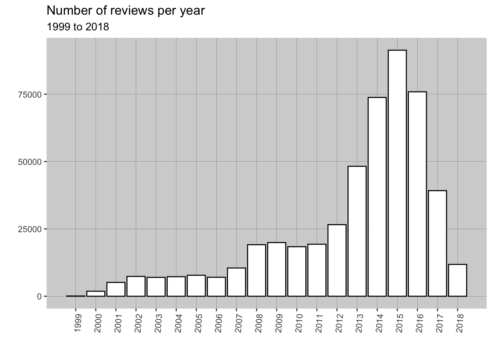
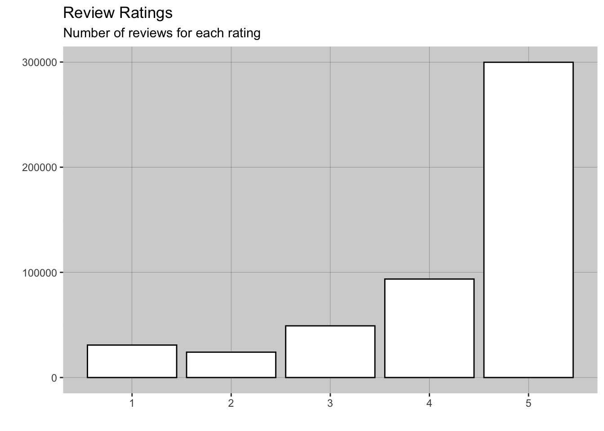
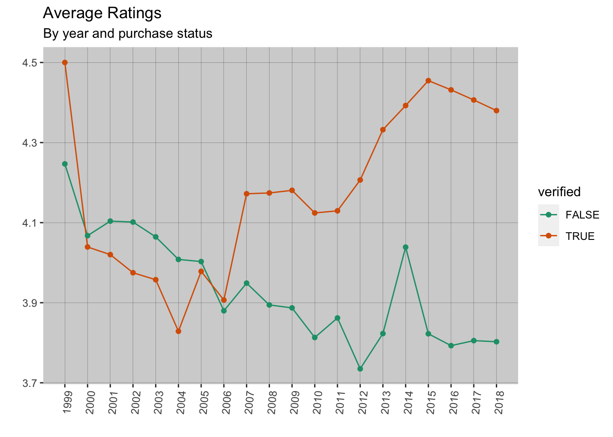

Report Overview:
This report summarises reviews submitted for Video Game products on Amazon from 1999 to 2018 made available by Ni et al. (2019). In total there are 497577 reviews in the dataset.
Number of Reviews by Year:
The below histogram shows the number of video game reviews submitted to Amazon by year. From 1999 reviews largely increased year-on-year which is unsurprising given the growth of Amazon and access to the internet. The dataset shows the peak number of reviews was 2015 with a decline from 2016 to 2018. It is likely that this reflects the dataset being incomplete for recent years rather than the number of reviews declining in reality. Number of reviews per year:
Verified Users:
The dataset contains details of whether the review was based on a verified purchase.From Amazon Community:
An “Amazon Verified Purchase” review means that we’ve verified that the person writing the review purchased the product from Amazon, and didn’t receive the product at a big discount. Reviews that are not marked “Amazon Verified Purchase” are valuable as well, but, either we cannot confirm that the product was purchased from Amazon, or that the customer paid a price that is available to most Amazon shoppers.
Table 1 shows the number of reviews based on verified and unverified purchases.
| verified | counts |
|---|---|
| FALSE | 164932 |
| TRUE | 332645 |
Whilst the number of verified reviews is substantially larger than the number of unverified reviews, the below histogram demonstrates that this has not been a consistent trend and that the large increase in the number of reviews is largely driven by an increase in verified reviews.
`summarise()` has grouped output by 'year'. You can override using the
`.groups` argument.
Review ratings:
Overall
Amazon review ratings are provided on a scale of 1 (worst) to 5 (best) stars. The histogram below shows the total number of reviews assigned each rating.

By purchase status
However, if you break this data down by verified purchases status you can see that whilst the number of verified and unverified reviews with 1 to 4 star reviews are similar, there is a very large number of 5 star reviews for verified purchases compared to unverified purchases.
`summarise()` has grouped output by 'rating'. You can override using the
`.groups` argument.
Average ratings
By purchase status
Average ratings for verified reviews were higher (both mean and median) than for unverified review, likely driven by the number of 5-star reviews for verified reviews.
| Verified | Mean rating | Median rating |
|---|---|---|
| FALSE | 3.91 | 4 |
| TRUE | 4.37 | 5 |
By year and purchase status
Average ratings for verified purchases tended to increase over time, while average ratings for unverified purchases tended to decrease over time.
